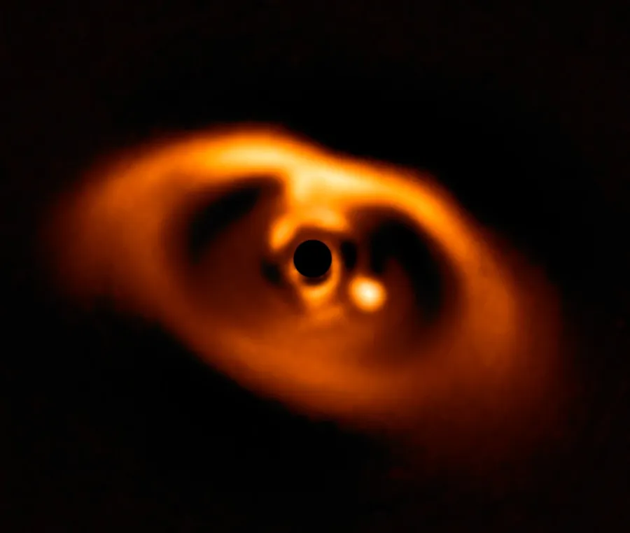

2. Juli 2018
PDS 70 b: erstes gesichertes Bild eines entstehenden Planeten
Mit dem Instrument SPHERE am Very Large Telescope der ESO gelang das erste gesicherte Bild eines Planeten, der sich noch in der Scheibe aus Gas und Staub um seinen jungen Stern bildet. PDS 70 b erscheint als heller Punkt neben dem Zentrum, das eine Koronografenmaske abdeckt. Geleitet wurde die Arbeit vom Max-Planck-Institut für Astronomie in Heidelberg.
Der Gasriese hat einige Jupitermassen und ist etwa drei Milliarden Kilometer von seinem Stern entfernt, ähnlich weit wie Uranus von der Sonne. Seine Temperatur liegt bei rund 1000 Grad Celsius; das Spektrum deutet auf eine wolkige Atmosphäre hin.
Quelle: ESO: "First Confirmed Image of Newborn Planet Caught with ESO’s VLT", 02.07.2018